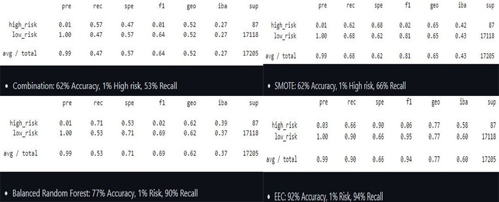

The objective of this project was to create a map that achieved 3 main goals being access to GeoJSON data, interactiveness, and visualize said data. Which I was able to achieve using JavaScript, d3, GeoJSON data provided by https://github.com/fraxen/tectonicplates, and lastly mapbox API.

In this project we worked to calculate credit risk based off customers requesting loans. Using scikit, imbalanced-learn, SMOTE, EasyEnsembleClassifier, RandomOverSampler packages and algorithms just to name of few. We then dove into our csv file, created the features off of customers information. Which set the building blocks for our logistic regression for a supervised machine.
Mauris neque quam, fermentum ut nisl vitae, convallis maximus nisl. Sed mattis nunc id lorem euismod placerat. Vivamus porttitor magna enim, ac accumsan tortor cursus at. Phasellus sed ultricies mi non congue ullam corper. Praesent tincidunt sed tellus ut rutrum. Sed vitae justo condimentum, porta lectus vitae, ultricies congue gravida diam non fringilla. Cras vehicula tellus eu ligula viverra, ac fringilla turpis suscipit. Quisque vestibulum rhoncus ligula.